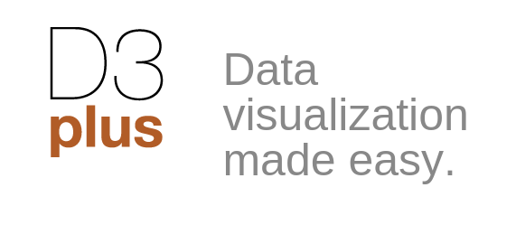
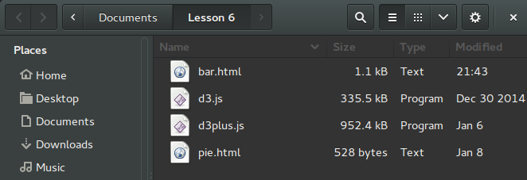

We will be working with a visualization package called D3 Plus, which is a simpler version of the more D3 platform.
This works by using JavaScript and HTML to generate visualizations.
The visualizations will use exported data from OpenRefine in a format called JSON.
JSON is pretty universal data format that hopefully you have seen before.
Download the Zip file with the JS files.
Create a new folder somewhere and extract all the files there.
You should see 4 files

To do this let us look at the structure of the HTML files: